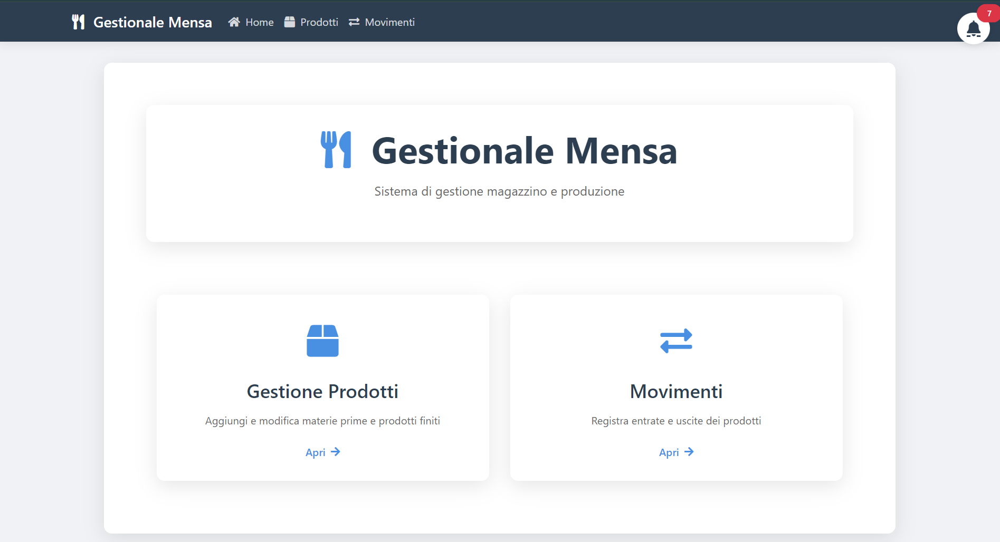
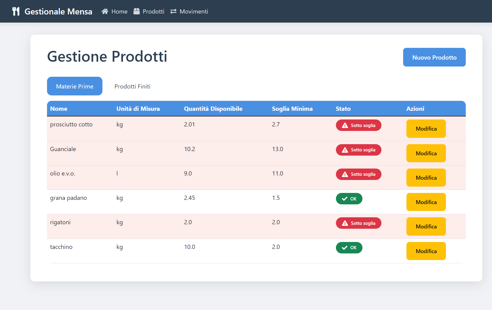
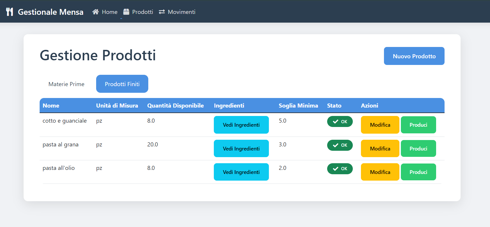
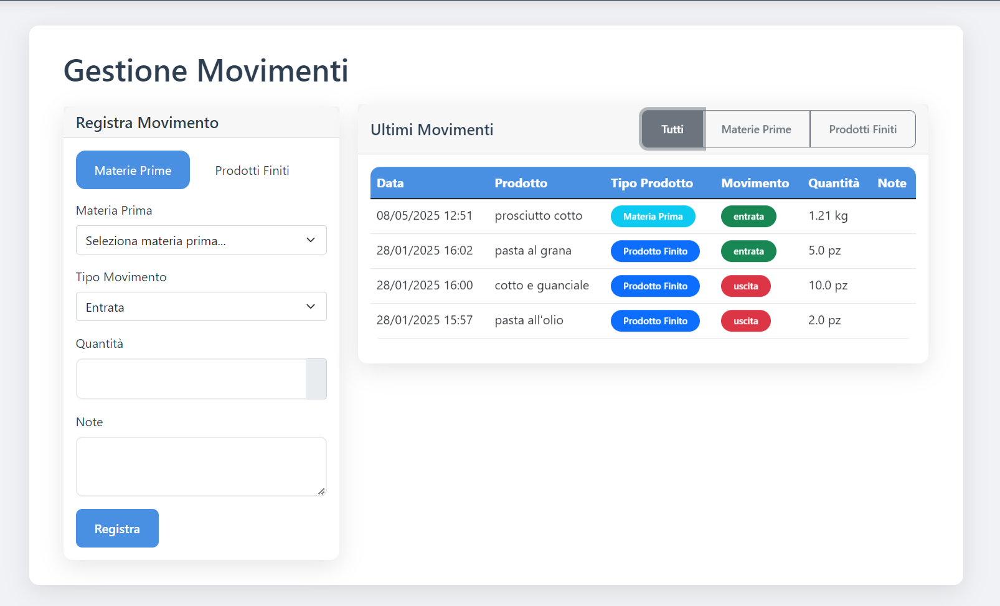
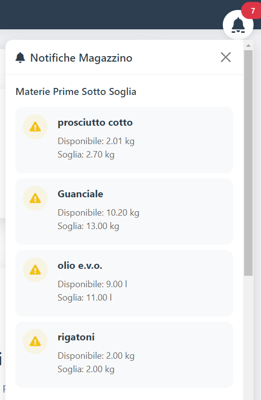
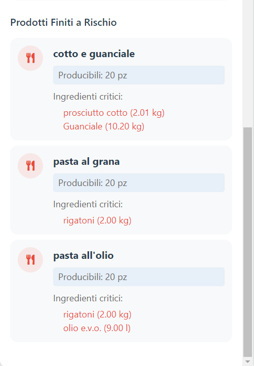

Il magazzino della mensa, sotto controllo
Gestionale completo per mense aziendali e ristorazione: scorte, ricette, movimenti e notifiche proattive in un'unica applicazione desktop, dal database all'interfaccia.

Tutto lo stato del magazzino in una schermata
La home mostra subito ciò che conta: prodotti sotto soglia minima e produzioni a rischio per scarsità di materie prime. Nessun report da aprire, nessuna query da scrivere.
- Alert automatici sotto soglia
- Produzioni a rischio evidenziate
- Accesso diretto a tutte le sezioni
Anagrafica e scorte delle materie prime
Ogni articolo ha nome, unità di misura e soglia minima di allerta. Le quantità disponibili sono sempre allineate ai movimenti: la produzione non resta mai senza ingredienti.

inventario MPProdotti finiti con distinta base
Per ogni prodotto finito si definisce la ricetta: quali materie prime servono e in che quantità. È il cuore del sistema — da qui nascono il calcolo di producibilità e lo scarico automatico degli ingredienti.
- Calcolo automatico della producibilità
- Scarico ingredienti a ogni produzione

prodotti finitiOgni movimento, tracciato
Entrate da acquisti o produzione interna, uscite per vendite o consumo: ogni operazione aggiorna in tempo reale la disponibilità e finisce nello storico, per una tracciabilità completa.

movimentiIl sistema ti avvisa prima del problema
Notifiche proattive quando le scorte scendono sotto soglia o quando un piatto non può essere preparato per mancanza di ingredienti: interruzioni prevenute e acquisti pianificati al momento giusto.


notificatoreCom'è costruito
Backend Flask con ORM SQLAlchemy su SQLite, interfaccia web-based servita in locale e pacchettizzazione PyInstaller: un solo eseguibile, nessuna installazione complicata.
Provalo sul tuo PC
Scarica l'applicazione completa oppure torna al portfolio per gli altri progetti.